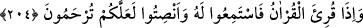

“–Senden sonra kim şeyh olacak?” diye sordular. O da:
“–Ölümümden sonraki üçüncü gün dervişler bir araya toplandığında yeşil kuş kimin
başına konarsa o olacak.” buyurdu.
Şeyh vefat edince dervişler kabri başında üç gün toplandılar. Üçüncü gün olup zikri
ve Kur’an okumayı tamamlayınca şeyhin bahsettiği hadisenin olmasını beklemeye
koyuldular.
Bir de baktılar ki yeşil bir kuş gelip kabrin yakınına kondu. İleri gelen dervişlerden
her biri kuşun kendi başına konmasını diliyordu. Derken kuş kanatlanıp döndü dolaştı ve
Şeyh Cevher’in başına kondu.
Böyle bir şeyin olacağı ne Cevher’in ne de dervişlerden birinin aklına gelmemişti.
Bunun üzerine dervişler Cevher’in etrafında toplanıp onu vefat eden şeyhin zaviyesine
götürmek ve onun şeyhlik makamına oturtmak istediler.
Şeyh Cevher ağladı ve “Ben şeyhliğe nasıl layık olabilirim? Ben bir çarşı-pazar
adamıyım. Ben dervişlerin yolunu ve âdâbını bilmem. Dışarıda işlerim var, diğer
insanlarla aramda bir kısım muameleler var.” diyerek bu ağır görevden kaçınmak istedi.
Dervişler ise:
“–Bu semâvî bir iştir, muhakkak yapman lazım. İnanıyoruz ki Allah Teâlâ lazım olan
şeyleri sana öğretecektir.” dediler. Bunun üzerine Şeyh Cevher: “O halde bana mühlet
verin, çarşıya gidip halkla olan haklarımı ödeşeyim.” dedi.
Ona mühlet verdiler. O da dükkanına gitti. Her hak sahibinin hakkını verdi. Sonra
çarşıyı terk edip zâviyeye döndü. Dervişler de ona gereken tazim ve ilgiyi gösterdiler.
Sonunda ismi gibi kendisi de Cevher oldu.
Hâfız der ki:
Kimse la’l ve mücevher istemiyor; yoksa güneş
Önceki gibi mücevher yapmakla meşguldür
Feyiz elde edebilmek için temiz bir cevher ve yaratılış gerek
Yoksa her taş ve toprak inci ve mercana dönüşmez
Allah Teâlâ: “Bu (Kur’an), Rabinizden gelen basîretlerdir...” ayetiyle Kur’an’ı
yücelttikten sonra ardından şöyle buyurdu:
204. Kur’an okunduğu zaman onu dinleyin ve susun ki size merhamet edilsin.
Şânının yüceliği ile ilgili hususlar zikredilen “Kur’ân okunduğu zaman onu” kabul